Photo credits
Every photo in this design preview is royalty-free stock. None shows the firm, its people, its office or its clients. Hollis & Avery Law is a fictional firm.
Used in Option A
-

Still water reflecting a soft dusk sky over a rocky shoreline
“Calm cold sunset” by Shiva Shenoy · Wikimedia Commons · CC BY 2.0 · resized and cropped
-
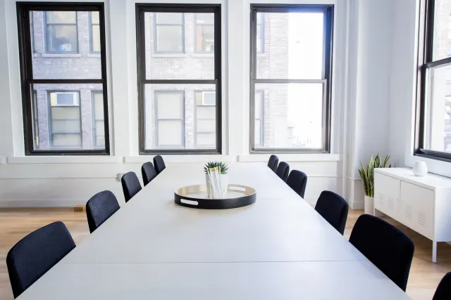
Daylight from tall windows across an empty conference table
Photo by Breather · Wikimedia Commons · CC0 1.0
-
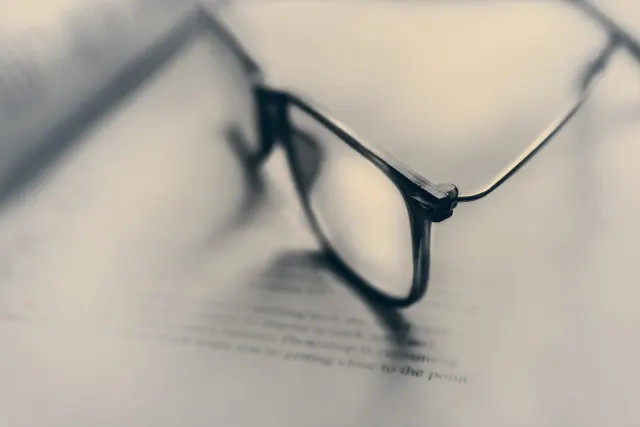
Reading glasses resting on a printed page
Photo by James Sutton · Wikimedia Commons · CC0 1.0
-
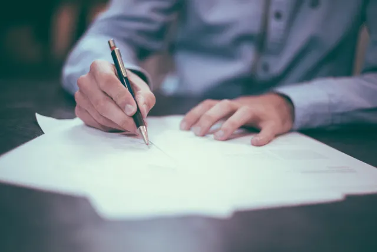
Hands signing a page of a printed document
Photo by Helloquence · Wikimedia Commons · CC0 1.0
.jpg){kind=link}
.jpg){kind=link}
.jpg){kind=link}
.jpg){kind=link}
Used in Option B
-
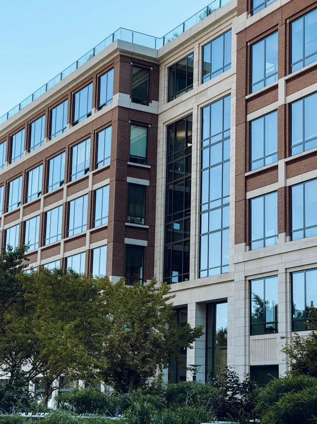
A brick and stone office building with tall windows rising above green trees
Photo by Eric Nixon · Pexels · Pexels License
-

Soft window light falling on an empty table and chairs
Photo by Matt Hoffman · Wikimedia Commons · CC0 1.0
-
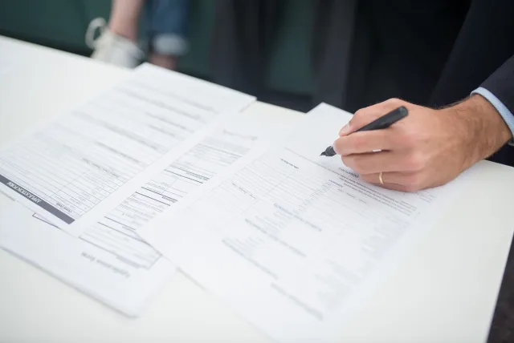
A hand signing a printed form with a fountain pen
Photo by Kampus Production · Pexels · Pexels License
-
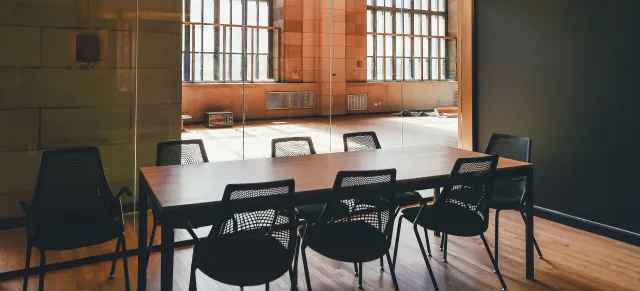
A quiet meeting room with a wooden table and black chairs
Photo by Crew · Wikimedia Commons · CC0 1.0
-
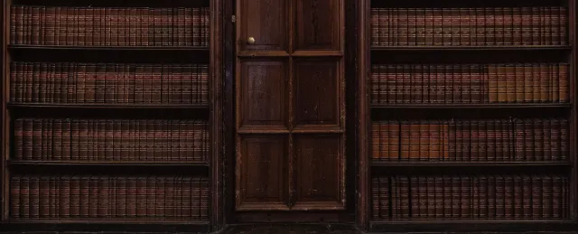
Rows of leather-bound books on dark wooden shelves on either side of a paneled door
Photo by Oleksandra Zelena · Pexels · Pexels License · cropped
-
One person handing a document across a desk to another
Photo by RDNE Stock project · Pexels · Pexels License
-
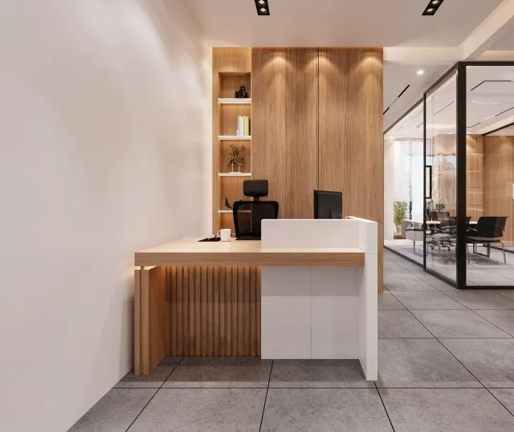
A modern reception desk in pale wood and white, with glass-walled meeting rooms behind it
Photo by Rana Matloob Hussain · Pexels · Pexels License · architectural render, cropped
.jpg){kind=link}
.jpg){kind=link}
Used in Option C
-
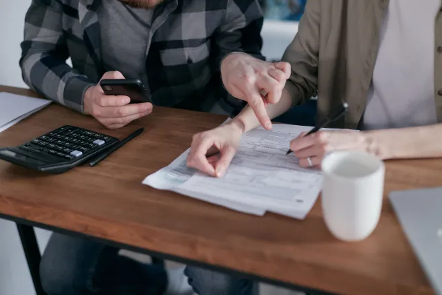
Two people going over paperwork together at a wooden table, one pointing to a line on the page
Photo by Mikhail Nilov · Pexels · Pexels License
-
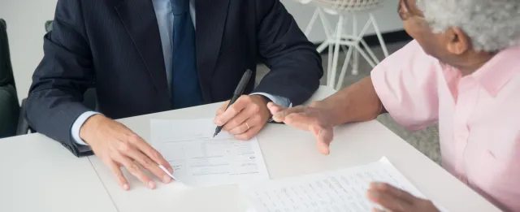
Two people at a white table reviewing and filling in a printed form together
Photo by Kampus Production · Pexels · Pexels License · cropped
-

A small wooden table and four chairs beside a sunny window
Photo by Breather · Wikimedia Commons · CC0 1.0
-
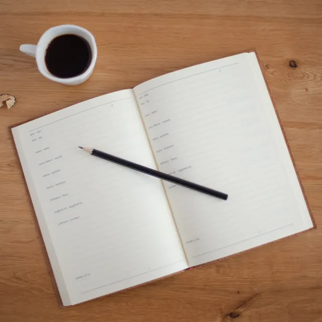
An open notebook and pencil beside a cup of black coffee
Photo by Hope House Press · Wikimedia Commons · CC0 1.0
.jpg){kind=link}
.jpg){kind=link}